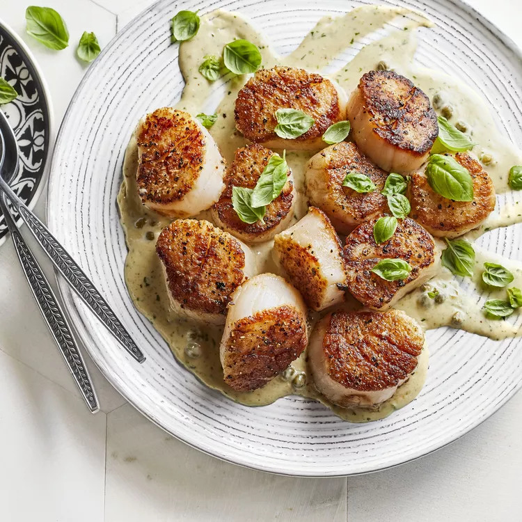

Scallops with Pesto Cream Sauce

Description
This delicious scallop dish only takes a few minutes to make and is to die for. Serve the scallops as they are or with some crusty bread, rice, or pasta.
Ingredients
- 1 pound scallops
- salt and freshly ground black pepper to taste
- 2 tablespoons all-purpose flour
- 2 tablespoons butter
- 1 tablespoon pesto
- 1 tablespoon capers
- 1 cup heavy whipping cream
Steps
- Season scallops with salt and pepper, then dredge in flour.
- Melt butter in a skillet over medium heat and add scallops. Cook for 1 to 2 minutes per side. Add pesto and capers; mix well. Stir in heavy cream and bring to a boil. Remove from heat and serve.